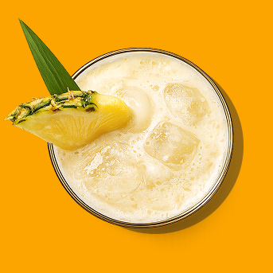
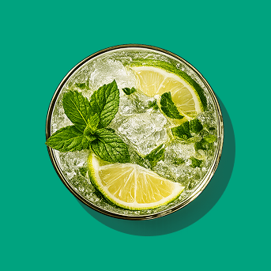

EL RITUAL
EMPIEZA AQUÍ
SCROLL
100
AÑOS EN LOS MISMOS VASOS, EN LAS MISMAS BARRAS.
HAY COSAS QUE NO PASAN DE MODA, PORQUE NUNCA FUERON UNA MODA.
MIXOLOGÍA
Cada ritual tiene su receta...

BARAIMA SPRITZ
BARAIMA BLANCO ®

MOJITO BARAIMA
BARAIMA AÑEJO ®

BARAIMA COLADA
BARAIMA CUBARAIMA ®
SCROLL